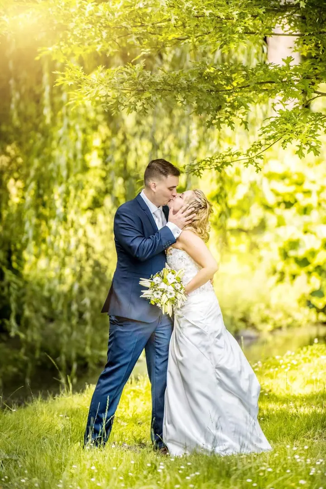
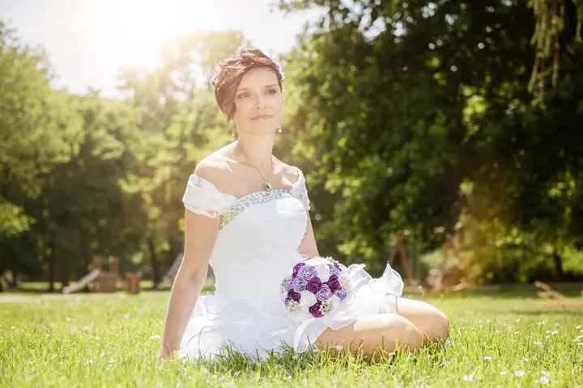

jedna
Svatby
Fotím obřad, portréty novomanželů i hostinu. Můžete si vybrat ze tří balíčků: Basic na 2 hodiny za 5 000 Kč, Komplet na 6 hodin za 10 000 Kč a Grande na 12 hodin za 15 000 Kč.


Jmenuji se Pavel Večerek a nejvíc fotím svatby. Fotografování se věnuji od roku 1995 a profesionálně od roku 2009. Od začátku si zakládám na vlastním stylu. Kromě svateb fotím portréty a produkty a na plesy a oslavy přivezu fotokoutek.
Více o mně
Co fotím
jedna
Fotím obřad, portréty novomanželů i hostinu. Můžete si vybrat ze tří balíčků: Basic na 2 hodiny za 5 000 Kč, Komplet na 6 hodin za 10 000 Kč a Grande na 12 hodin za 15 000 Kč.
Přivezu fotokoutek s klíčovacím pozadím na svatbu, firemní akci nebo ples. Na plesy ho vozím zdarma a fotoreport z akce stojí 1 000 Kč za hodinu.
Portréty fotím v ateliéru nebo venku. Nejkratší focení v ateliéru trvá 15 minut a stojí 1 000 Kč, glamour focení trvá 2 hodiny a stojí 3 500 Kč.
Fotím produkty, jídlo a interiéry pro firmy, které potřebují čisté a použitelné fotky. Hodina focení interiéru stojí 3 000 Kč.

Chvíle jen pro vás dva ve stínu stromů


Za objektivem
Fotografování se věnuji od roku 1995. V roce 2009 jsem z něj udělal svou profesi a od té doby fotím svatby, portréty, produkty i akce. Od začátku jsem chtěl mít vlastní fotografický a grafický styl, podle kterého mě lidé poznají.
Na svatbách nejraději fotím venku v zeleni. Hledám teplé světlo, stín starých stromů a místa, kde se novomanželé na chvíli zastaví a jsou spolu. Fotím ale celý den, od obřadu přes přípitek až po krájení dortu.
Kromě focení vozím na svatby, plesy a firemní akce fotokoutek s klíčovacím pozadím, u kterého se hosté pobaví. Rezervaci vyřídíte přes formulář na webu. Vyberete druh focení a do zprávy napíšete, co potřebujete.
Pavel
V rezervačním formuláři vyberete druh focení nebo svatební balíček a do zprávy připíšete, co máte v plánu.
Ozvu se vám a společně projdeme program dne, místa, kde se bude fotit, a jestli chcete i fotokoutek.
Na místě budu podle vybraného balíčku, tedy 2, 6 nebo 12 hodin. Na portréty vás vezmu do zeleně a do dobrého světla.
Fotky vyberu a upravím ve svém stylu. Pak vám je předám.
Portfolio
Otázky
Mám tři balíčky. Basic na 2 hodiny stojí 5 000 Kč, Komplet na 6 hodin 10 000 Kč a Grande na 12 hodin 15 000 Kč.
Ano. Fotokoutek s klíčovacím pozadím na 4 hodiny stojí 15 000 Kč. Na plesy ho vozím zdarma.
Ano. Fotím portréty v ateliéru i venku, glamour, novorozence, narozeninové focení, produkty, jídlo, interiéry a fotoreporty z akcí.
Vyplníte rezervační formulář na webu, vyberete druh focení a do zprávy můžete upřesnit, co potřebujete. Pak se vám ozvu.

Napište pár vět o tom, co si představujete. · +420 601 394 486